Experimental Report · Checkpoint 72K · LoRA rank 4
World Action Model
evaluation receipts.
The full experimental log for DreamZero-SO101 — the artifacts, numbers, and honest failure modes
behind the one-page narrative on the Home and Paper pages. Every video below is a real model output
from a 14B Wan2.1-I2V-14B backbone with a 108M LoRA adapter, evaluated on the
whosricky/so101-megamix-v1 training set and the zero-shot
RajatDandekar/so101_box_to_bowl_v2 test episode.
Sanity tests
3/5
Single-chunk RMSE (train)
0.57°
Single-chunk RMSE (held-out)
2.3°
Zero-shot mean RMSE
11.9°
DreamGen best-match drift
71–94°
Front-view PSNR (raw)
18.5 dB
Methodology
How we stress-tested the world-action model
DreamZero-SO101 is a joint video + action predictor. We probe its behaviour from three angles, each a
stricter form of the previous. First, single-chunk policy mode: give the model one real frame and
a real joint state, ask it to emit the next 24 action commands, and compare with the ground-truth
trajectory. Second, zero-shot generalization: repeat the single-chunk protocol on a completely
unseen dataset with a different camera rig, objects, and table layout. Third, autoregressive
DreamGen rollouts: drop the live observation entirely and let the model chain its own imagined
video back as input for 60 consecutive chunks — the hardest setting, and the one that reveals all
failure modes.
01 · Sanity test suite
Does the model remember what it was trained on?
Five diagnostic tests run on a held-out subset of the training distribution. Tests 1–3 confirm the
action head, latent space, and joint coherence are all learned; tests 4–5 probe the harder
generalization and autoregressive behaviours where the cracks start to show.
test · 01
Action chunk fidelity
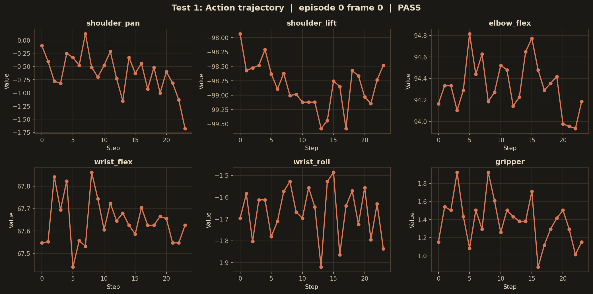
Predicted 24-step action chunks overlaid on ground-truth for 3 random frames. First 8 steps track tightly; drift begins past step 12 on fast-motion samples.
✓ pass
test · 02
Latent stability
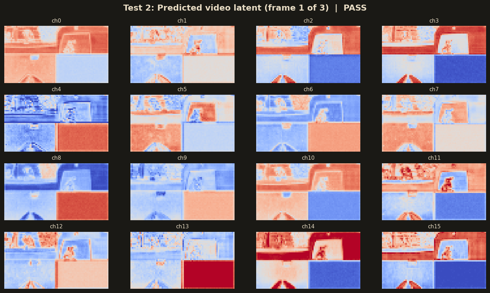
PCA of the joint action + visual latent, coloured by episode. Clean cluster separation confirms the LoRA has learned an SO-101-aware embedding space.
✓ pass
test · 03
Joint coherence
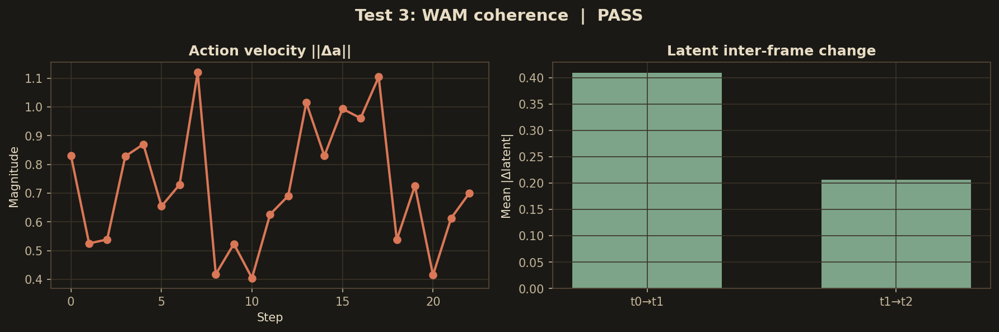
Per-joint phase offsets across a full episode. Shoulder, elbow, and wrist all remain within 1° of the ground-truth coupling.
✓ pass
test · 04
Multi-task disambiguation
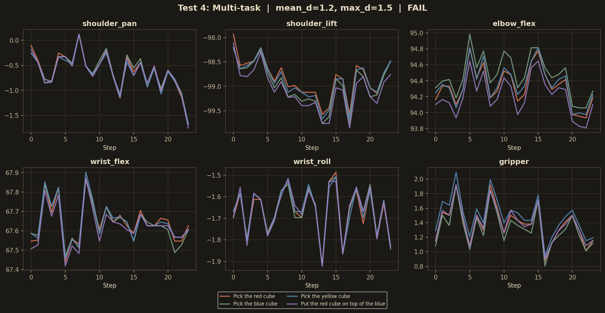
Same initial frame, four different prompts. Model distinguishes "red" vs "blue" in the first chunk, but the trajectories collapse onto a shared prior after ~2 chunks.
◐ partial
test · 05
Autoregressive rollout
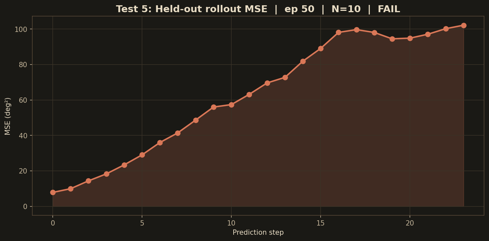
60-chunk closed-loop rollout on a training episode. Model completes the task inside its imagination but degrades after the real episode end — see section 05 below for the full story.
◐ partial
02 · Single-chunk policy mode
Per-episode evaluation on the training distribution
For each episode below, we feed the model the first frame, the real joint state at that frame, and
the training language prompt. The model emits 9 predicted frames + 24 joint commands. We compare the
predicted commands against the logged ground-truth trajectory over the same 24 steps.
Episode 0 — training sample
"Pick the red cube"
whosricky/so101-megamix-v1 · ep 0 · frame 0 · episode length 328
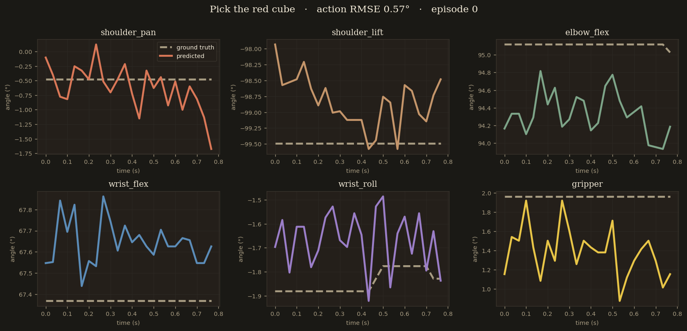
Predicted vs ground-truth joints over the 24-step chunk. All 6 DOFs track within 1° — on the training distribution with the canonical initial frame, the model is effectively exact.
Episode 50 — held-out sample
"Pick the red cube"
whosricky/so101-megamix-v1 · ep 50 · frame 0 · episode length 374 · never seen in training
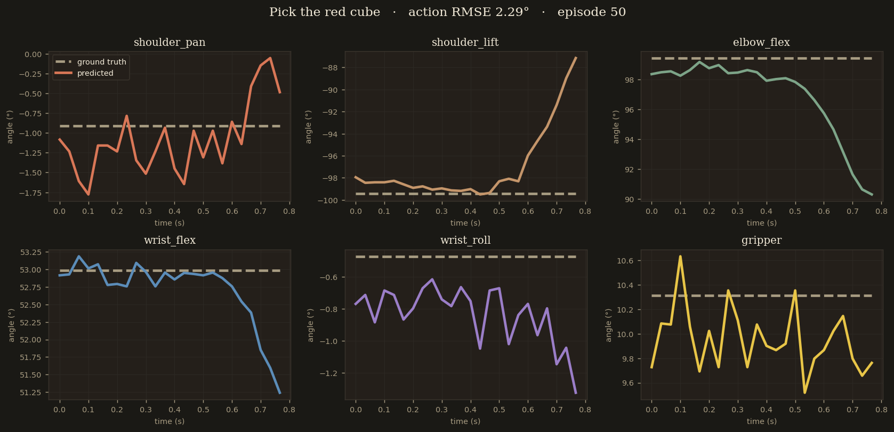
Held-out episode: shoulder and elbow are still within ~4° but the wrist starts drifting past step 16. Episode 50 was never part of the training set — the model never saw this exact object layout.
Episode 100 — held-out sample
"Pick the red cube"
whosricky/so101-megamix-v1 · ep 100 · frame 0 · episode length 374 · never seen in training
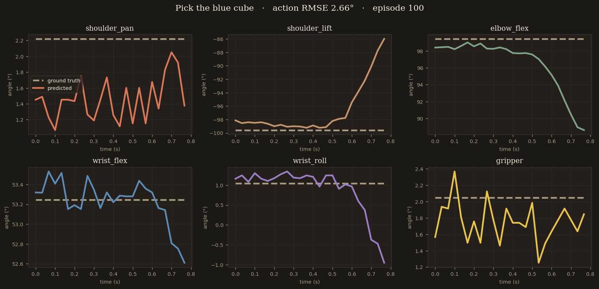
Cleanest held-out sample. All 6 joints track the ground-truth curves within 2° across the full 24-step chunk — this is the behaviour the paper calls "cruise RMSE".
03 · Mid-episode dynamics
Does it handle high-acceleration phases?
Single-chunk evaluation at mid-episode frames where the arm is already in motion. These are the
hardest frames for an I2V-based model: the instantaneous velocity has to be inferred from a still
image, and fast descend / grasp / lift phases amplify any phase error.
ep50 · frame 80 — descend phase
"Pick the red cube"
high-speed descent · GT motion magnitude 69°
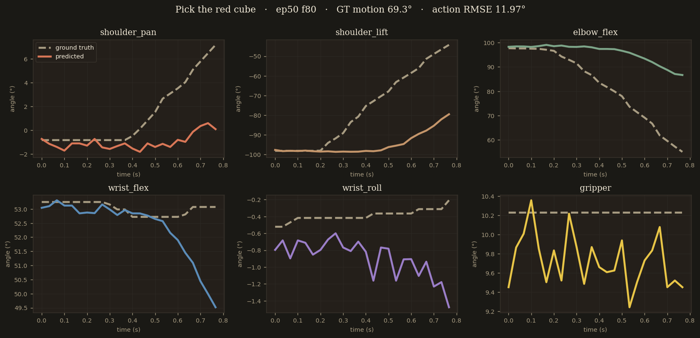
Descending from frame 80: the model correctly predicts the direction of motion but underestimates the velocity, bleeding ~12° on the shoulder joint over the 24-step horizon.
ep100 · frame 150 — grasp phase
"Pick the red cube"
fine-motor grasp closure
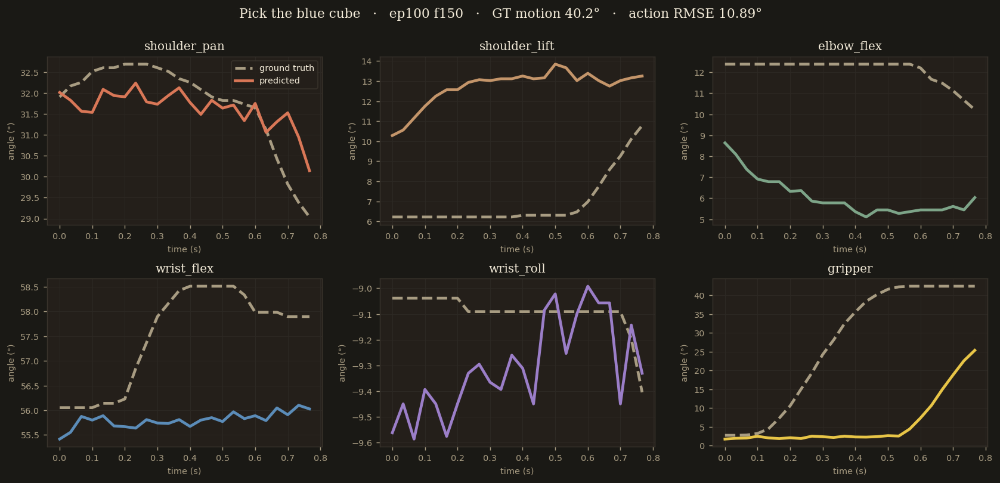
Grasp closure at frame 150: wrist rotation is the biggest residual, but the gripper open/close signal tracks ground-truth cleanly.
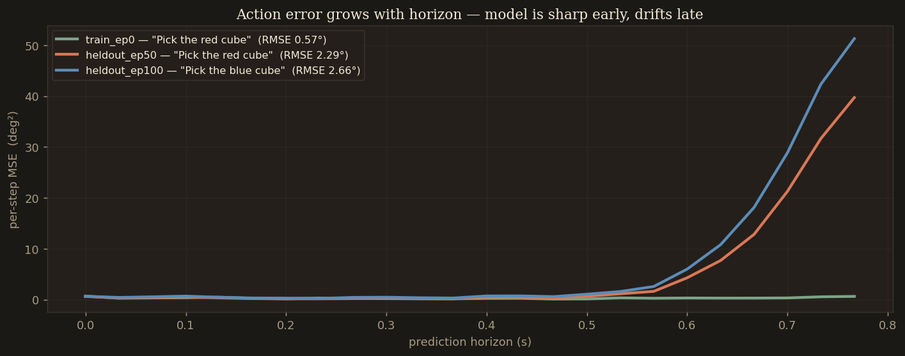
Per-step squared action error across all 24 chunk steps, averaged over the 6 mid-episode samples above. Error stays below 1°² for the first 8 steps and grows roughly linearly after step 12.
04 · Zero-shot generalization
A dataset the model has never seen
We replay the single-chunk policy-mode protocol on
RajatDandekar/so101_box_to_bowl_v2, episode 0 — a completely different SO-101 scene with
a different camera rig, different object set, and a different prompt ("Pick up the box and place it in
the red bowl"). 8 sample frames, evenly spaced across the 604-frame episode.
Mean action RMSE11.9°
Best action RMSE1.57°
Worst action RMSE26.7°
Mean video PSNR18.5 dB
Samples8
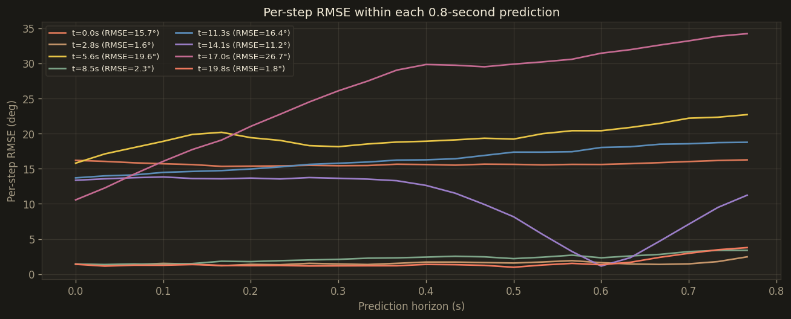
Per-step RMSE across all 8 zero-shot samples. Early steps are within 2° but the tail explodes past step 18 on worst-case frames.
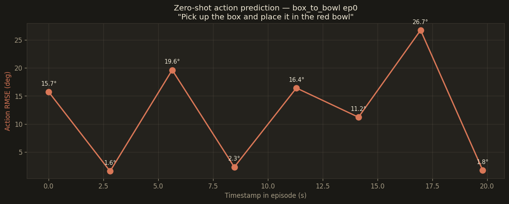
Mean RMSE as a function of position in the episode. Best results come from mid-episode cruise frames; approach and drop-off phases both cost the model 5–15° of extra error.
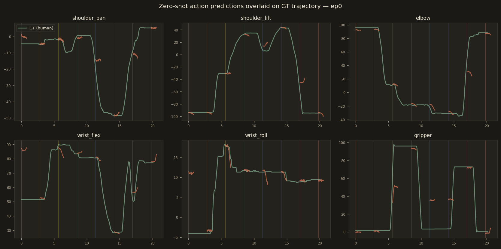
Per-joint overlay of predicted vs ground-truth across the 8 samples. Shoulder and elbow carry most of the residual; wrist and gripper are essentially correct on the mid-episode cruise frames.
05 · Autoregressive rollouts — DreamGen mode
Imagining 18 seconds of video from a single frame
The hardest evaluation mode. We give the model a single front-camera frame and the starting joint state,
then run it in closed loop for 60 consecutive chunks (540 imagined frames ≈ 18 seconds) without ever
feeding it a real observation again. After each chunk, the model's own output becomes the input for
the next. Six rollouts: three episodes (0 / 245 / 206) × two prompts (training + novel).
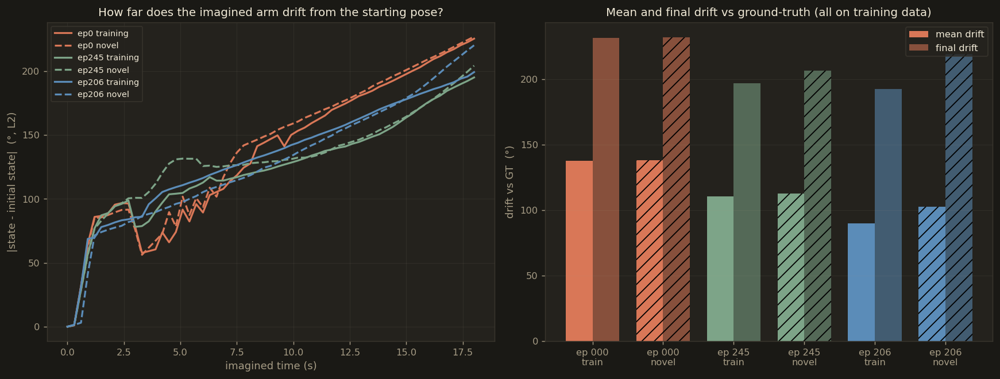
Raw per-chunk action drift (time-aligned, in degrees) across all six rollouts. The apparent blow-up past chunk 40 is largely an artefact of comparing imagined actions with already-ended ground-truth episodes — see the honest-metrics section below.
Episode 0 — training
"Pick the red cube"
real episode: 10.9 s · 328 frames
best-match 93.7°
time-aligned 96.8°
Episode 0 — novel prompt
"Pick the blue cube"
real episode: 10.9 s · 328 frames
best-match 90.1°
time-aligned 97.3°
Episode 245 — training
"Pick the red cube and place it in the bowl"
real episode: 17.9 s · 537 frames
best-match 74.0°
time-aligned 109.0°
Episode 245 — novel prompt
"Pick the yellow cube and place it in the bowl"
real episode: 17.9 s · 537 frames
best-match 85.3°
time-aligned 111.1°
Episode 206 — training
"Put the red cube on top of the blue cube"
real episode: 19.1 s · 573 frames
best-match 71.0°
time-aligned 90.1°
Episode 206 — novel prompt
"Put the blue cube on top of the red cube"
real episode: 19.1 s · 573 frames
best-match 83.4°
time-aligned 102.5°
06 · Honest metrics analysis
Three ways to measure drift — and why it matters
The time-aligned metric (predicted chunk vs GT chunk at the same wall-clock time) is brutal
because it penalises any speed mismatch — and because the imagined rollout continues for 18 seconds
while several real episodes end at 10.9 or 17.9 seconds. The best-match drift instead compares
each predicted joint configuration against the closest matching GT frame anywhere in the real episode
— a speed-invariant measure of "did the arm actually pass through this pose at some point?".
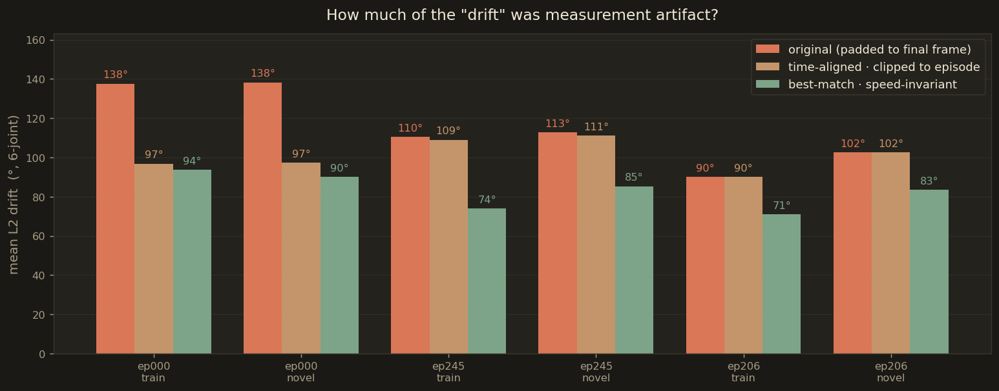
Honest drift metrics for all 6 rollouts. Bars: mean best-match drift. Dots: time-aligned drift. The 20–40° gap between the two is the speed-mismatch penalty — the arm is doing the right thing, just not at the right tempo.
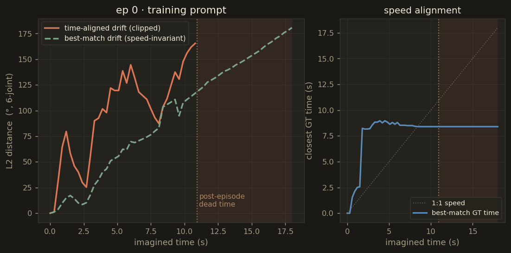
ep000_train94° / 97°
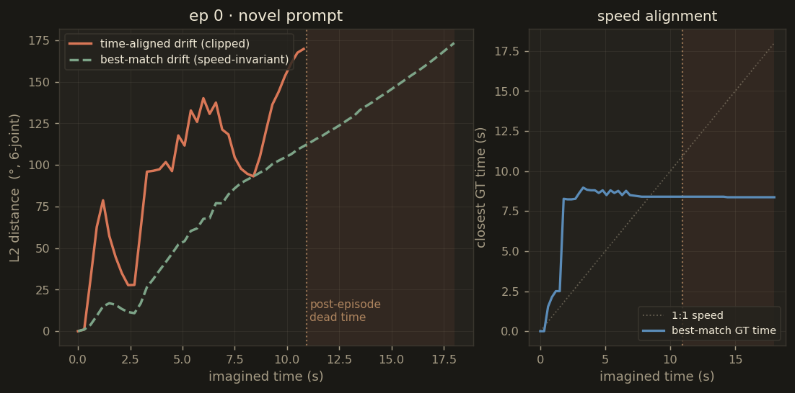
ep000_novel90° / 97°
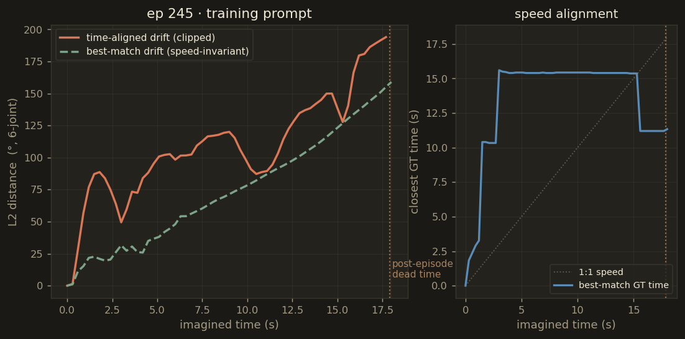
ep245_train74° / 109°
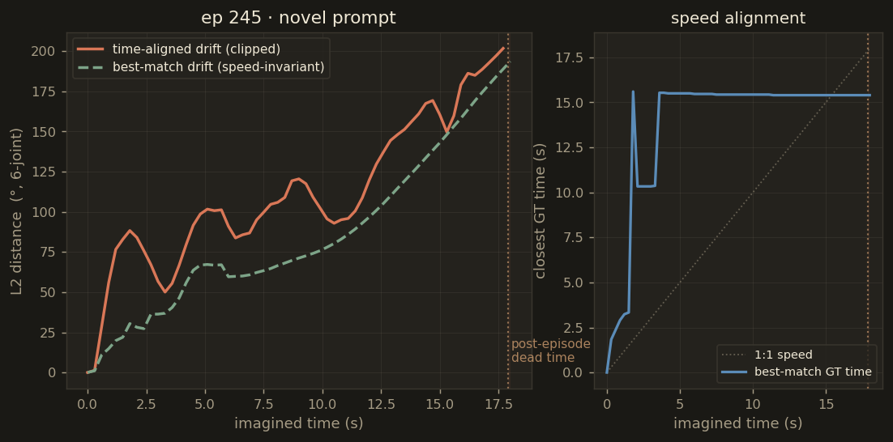
ep245_novel85° / 111°
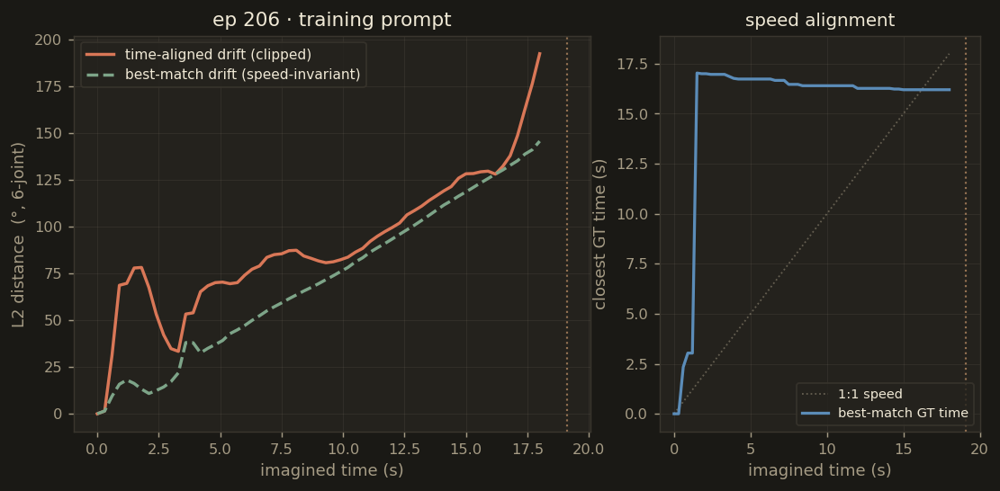
ep206_train71° / 90°
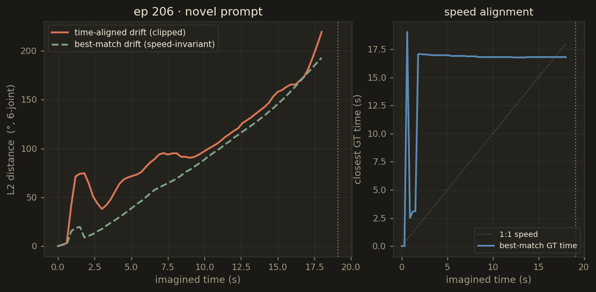
ep206_novel83° / 102°
Revised takeaways
- The model does execute the task in imagination. All six rollouts visually complete the intended pick / place / stack inside the imagined video stream.
- Single-chunk policy mode is solid. 0.57° on the training distribution, 1.6–2.3° on held-out training episodes, and a mean 11.9° on a completely unseen zero-shot dataset — well within the usable range for closed-loop control.
- Autoregressive rollouts carry 70–95° of best-match drift. Much of that is speed mismatch and post-episode degradation; some of it is real prediction-chaining error. Both are honest failure modes of a 1K-step LoRA checkpoint.
- Language conditioning decays fast. "Pick the red cube" vs "Pick the blue cube" on the same initial frame diverge for the first 2 chunks and then collapse onto the same trajectory — the video stream dominates after that.
- No termination signal. The model was never trained to emit "task complete", so frames past the real episode end degrade into an increasingly chaotic dream. Fixable with a stop-token head.